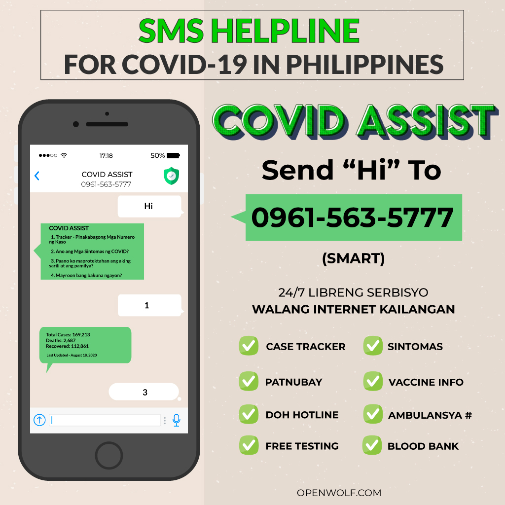

COVID ASSIST - Why I Built an SMS Bot for COVID-19

Chatbots are an effective means of information dissemination used by governments and companies all around the world. Almost always these applications depend on the internet. So what happens to those people who do not have decent access to the internet? The answer to this question is what lead me to build ‘COVID ASSIST’ - an SMS Bot to help spread information about COVID-19 to those with limited access to the internet.
‘Bots’ are an integral part of most websites these days. They are also commonly used in Facebook pages and Whatsapp chats to automate inquiries and follow up business leads. In terms of healthcare, these programs come in the form of telemedicine, research, and public health messaging.
Today there are several COVID-19 Apps and Bots used for - symptom checking, tracking, and general awareness. The WHO has COVID-19 bots on Facebook Messenger and on Whatsapp. Department of Health (DOH) Philippines released the “Kontra COVID Bot” and University of Philippines (UP) launched their EndCovid Bot named ‘Yani’. Bots like the ones made by WHO has a potential to reach 4.2 billion people – helping people protect themselves from COVID-19, prevent its spread, and understand the facts related to the disease.
The one common factor in all these bots or apps is the internet. In the present world where Tiktok and Facebook have dominated our attention, there still exists a large part of our population that lives in the dark - in a world without the internet. Almost half of the world’s population (57.8 %) has no internet access. This is because the Internet has developed unevenly throughout the world. Sociologists call this situation the ‘Digital Divide’.
The concept of the “digital divide” points to the increasing gap between the disadvantaged members of society, especially the poor, rural, elderly, and the handicapped portion of the population who do not have access to smartphones or the internet; and the wealthy, middle-class, and young living in urban and suburban areas who not only have access to high-speed internet but also know how to properly benefit from the internet.
The Pandemic Is Forcing Everyone to Face the Digital Divide
The Philippines outperforms several other Asian countries in terms of internet access. Close to 67% of Filipinos have access to the internet. Internet use here is also highly mobile. We commonly depend on affordable options like Free Facebook and mobile promos which, while cheap, has restrictions on basic internet. Also, adequate internet access to ‘apps’ requires a smartphone. Only 40-50% of the country own smartphones. The rest, while still has access to phones - use cheaper phones with keypads and small screens, limiting usage to phone calls and texts.
As COVID-19 forces life to move online, who is left behind?
While there are brilliant initiatives from the Philippine Government for Internet Access, like the Republic Act 10929 - providing free internet access in public spaces, the fact is - we can do more. In fact, we can do more for less.
SMS - Text messaging, unlike the internet is not hindered by the digital divide. It has become an integral part of our lives, more so than the internet. Filipinos prefer text messaging over phone calls as their preferred means of communication.
In addition to this, we have decades of research confirming the success of sms based health education messaging. SMS has the potential to penetrate all classes of the society, yet is underutilized.
This is what prompted me about six months ago, to try and develop technology that can reduce the gap between socioeconomic divides. COVID ASSIST is one of the results of that effort, a proof of concept.
To build COVID ASSIST, I used a Raspberry Pi and an old USB modem for the hardware. The content for the SMS messages were directly translated from WHO Covid-19 chat bots. I coded a simple bash script to automate the responses, piped a few responses to Python and used Gammu, an SMS Daemon to manage the messaging. Including text messaging costs and the hardware, I roughly spent ₱4000 (80 USD) on the whole project.
Commerical SMS Messaging suites and APIs provided usually by telecom operators or service providers, that can do the same thing I did, but of course far more efficiently, are still very expensive and outside the reach of local health care or regional public health organizations.
COVID-19 has forced us to depend extensivelty on technology, and for those without access to such internet based technology should not be left behind while we march ahead.